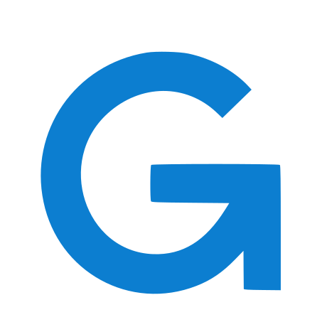

Unified model entry point
Expose one gateway for multiple upstream providers, protocols, endpoints, and credentials.

NeoGate GitHubSelf-hosted AI infrastructure
NeoGate brings OpenAI-compatible and Anthropic-compatible APIs, model routing, upstream credential management, usage tracking, and billing into one privately controlled gateway.
What it does
NeoGate is built for organizations that need controlled access to upstream model providers without spreading vendor keys across every service and team.
Expose one gateway for multiple upstream providers, protocols, endpoints, and credentials.
Issue isolated keys for teams, customers, services, and automation jobs.
Route by model, provider, priority, weight, credential status, and channel health.
Track requests by user, project, API key, model, provider, and upstream channel.
Run as an internal gateway or enable credit balance, recharge, pricing, and paid access.
Start with Docker Compose, then move to clustered deployment when traffic needs it.
Architecture
Requests enter through OpenAI-compatible or Anthropic-compatible routes, pass project policy checks, select an upstream channel, and produce usage records for analysis, chargeback, or billing.
Quick deploy
git clone https://github.com/neogate-io/NeoGate.git
cd NeoGate
docker compose up -d --build
Open the deployed address to complete the first-run wizard for administrator account, service mode, initial upstream, prices, SMTP, and payment settings.